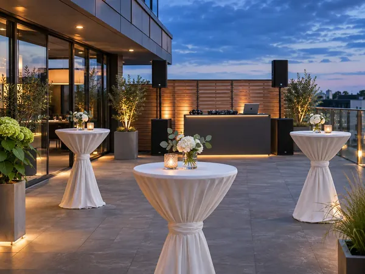

DJ para eventos de empresa
Cenas de empresa, presentaciones y fiestas: música, micrófono y ambiente para que el evento salga como lo habéis pensado.
Pedir presupuesto para un evento
El día
La música de cada momento
Recepción
Música de ambiente mientras llegan los invitados.
Cena o presentación
Volumen cuidado para que se pueda hablar, y speaker si hace falta.
Fiesta
Música para bailar después de la cena.
Qué incluye
Todo lo que necesitas, de una vez
Más de 25 años de experiencia como DJ, speaker y animador, al servicio de tu evento.
- Equipo de sonido propio
- Música preparada contigo antes del evento
- Speaker y animación, si los necesitáis
- Ayuda con los tiempos del evento
- Atención en español
Cómo trabajo
Así lo preparamos
- Primero
Hablamos
Me cuentas qué celebras, la fecha, el lugar y cuántos invitados esperas.
- Después
Preparamos la música
Vemos juntos el estilo y las canciones que no pueden faltar.
- El día
Disfrutas la fiesta
Tú disfrutas con tus invitados; de la música y el ambiente me ocupo yo.
Dudas
Lo que más se pregunta
¿Qué tipo de eventos haces?
Bodas, cumpleaños, fiestas privadas, cenas y eventos de empresa, fin de año y todo tipo de celebraciones.
¿Llevas equipo de sonido?
Sí, llevo mi propio equipo.
¿Haces también de speaker o animador?
Sí. Además de DJ, trabajo como speaker y animador, y te ayudo a organizar los tiempos del evento.
¿Cuánto cuesta?
Depende de la fecha, el lugar y lo que necesites. Cuéntaselo a Rayco en el formulario y te prepara el presupuesto.
¿Tenéis fecha?
Cuéntale a Rayco qué celebráis, cuándo y dónde. Te responde personalmente con tu presupuesto.
Pedir presupuesto para un evento